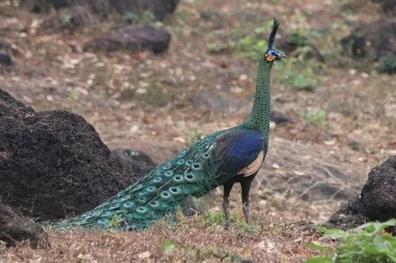

鸟类 · 动物界
绿孔雀 Pavo muticus

中国唯一的原生孔雀，雄鸟通体翠绿泛金属光泽，尾屏展开可近 2 米，野生种群仅存于云南南部。
- 分类
- 门脊索动物门纲鸟纲目鸡形目科雉科属孔雀属
- 栖息环境
- 云南南部的热带季雨林、河谷灌丛与竹林边缘，多靠近溪流和开阔沙地
- 地理分布
- 中国云南南部及东南亚的缅甸、泰国、老挝、越南和印尼爪哇岛
- 保护级别
- IUCN 濒危（EN）；中国国家一级保护动物
物种志
绿孔雀是体型最大的雉类之一，雄鸟体长含尾屏可达 230–300 cm，体重 4–6 kg。全身羽毛以翠绿、铜绿为主，在阳光下泛出金属光泽，头顶有直立的簇状冠羽，脸部和喉部裸露的皮肤呈黄蓝相间。雌鸟体型较小，羽色以暗绿褐色为主，远不如雄鸟华丽。
绿孔雀栖息于云南南部的热带季雨林、河谷灌丛和竹林边缘，喜欢靠近水源的开阔地带，常在河滩沙地洗沙浴。它们以浆果、种子、嫩叶和昆虫为食，也会捕食小型脊椎动物。繁殖期雄鸟展开巨大的尾屏并发出响亮的鸣叫，一雄多雌；每窝产卵 3–6 枚，孵化 27–30 天。由于栖息地破碎化和偷猎，中国野生绿孔雀已不足 600 只，主要分布在云南双柏、新平等地；东南亚种群同样持续下降，被世界自然保护联盟列为濒危物种。
形态与习性
- 食性浆果、种子、嫩叶、昆虫及小型脊椎动物
- 体长雄鸟含尾屏可达 230–300 cm
- 体重雄鸟 4–6 kg，雌鸟明显较轻
- 寿命野外约 15–20 年
- 繁殖每窝产卵 3–6 枚，孵化 27–30 天
- 中国种群野生约 550–600 只，仅分布于云南
- 鸣叫晨昏发出洪亮的“噢—噢”声，可传出 1 km 以上
趣味知识
- 动物园里常见的开屏孔雀多是蓝孔雀，绿孔雀才是中国唯一的原生孔雀。
- 雄绿孔雀的尾屏其实由 100 多根尾上覆羽构成，真正的尾羽短而硬，起支撑作用。
- 绿孔雀冠羽呈直立的簇状，蓝孔雀的冠羽展开如扇，这是野外辨识两种孔雀的要点。
- 它们爱在河滩沙地打滚洗沙浴，用沙土摩擦羽毛来清除寄生虫。